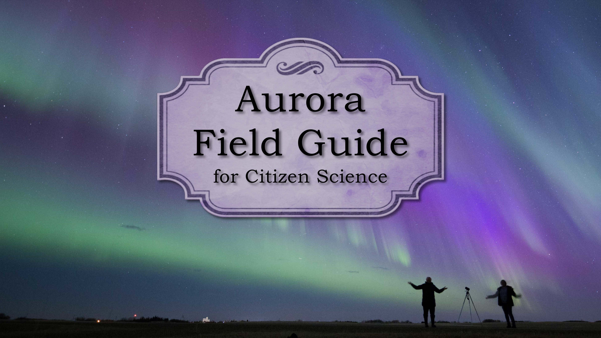

Welcome!
We are a team of scientists and citizen scientists, all united by a shared passion for the aurora! Together, in the Auroral Research Coordination: Towards Internationalised Citizen Science (ARCTICS) group, we’ve combined our expertise to create two valuable resources for the aurora community.
Overview
On this website, you will find two key resources designed to support citizen scientist involvement in aurora research:
Aurora Field Guide: A visual guide to different auroral forms, helping you identify various types of aurora in your own photographs.
Aurora Handbook: A detailed guide explaining how to capture aurora images for scientific research, submit your photos, and understand how collaborations with scientists can contribute to new discoveries.
License & Citation
To cite the work, we ask that you use the above doi.
Both guides are licensed under a Creative Commons Attribution-NonCommercial 4.0 International License (CC BY-NC 4.0).
Aurora Field Guide for Citizen Science
Click Here for the Aurora Field Guide
Aurora Handbook for Citizen Science
Click Here for the Aurora Handbook (PDF)
Or browse the Handbook online by clicking the links below.